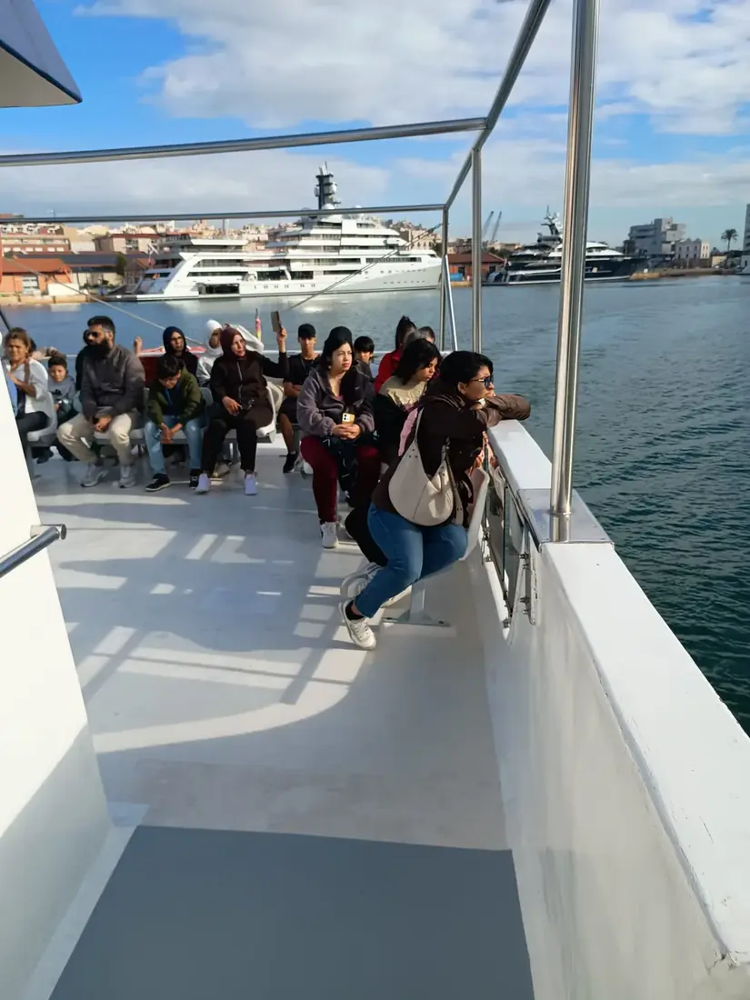
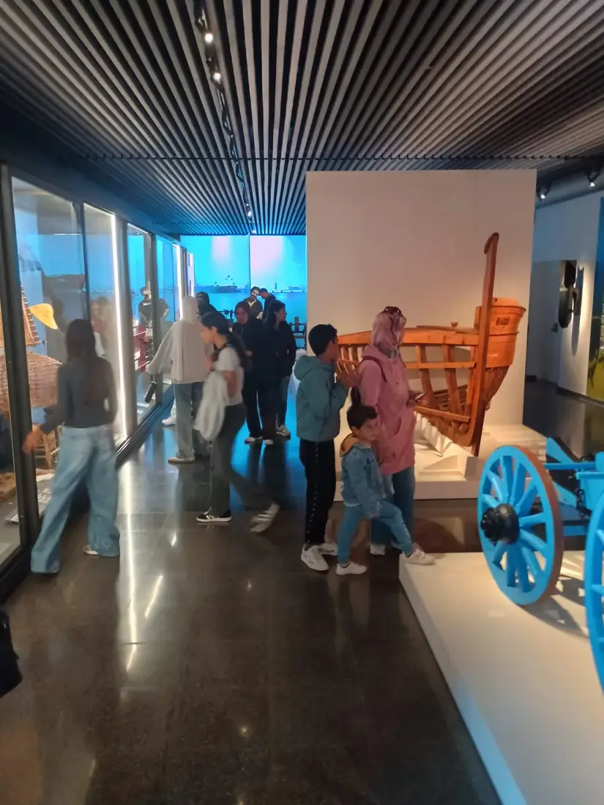
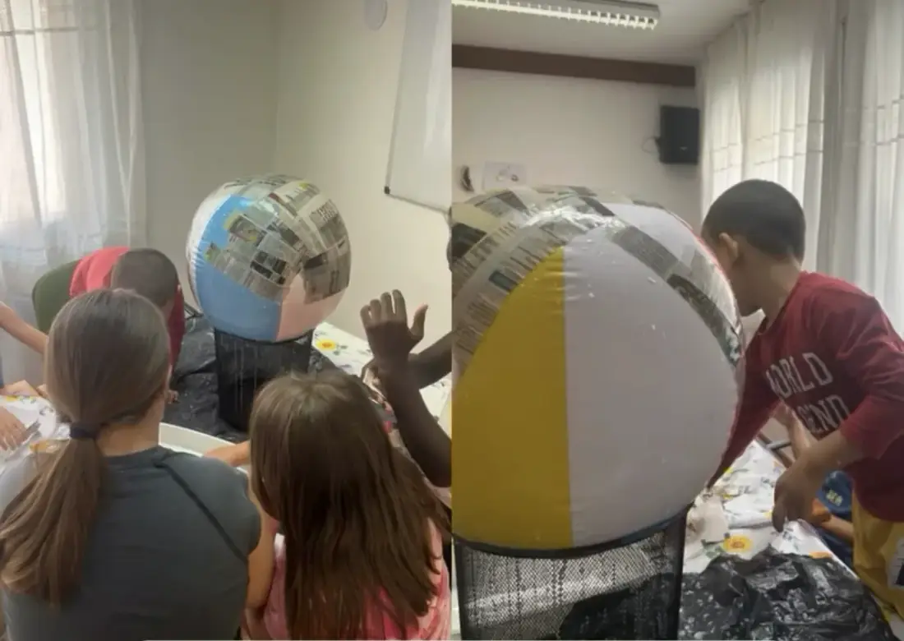
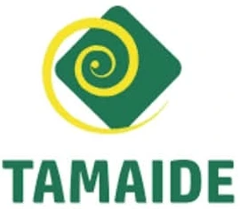

Educació, comunitat i oportunitats per transformar el territori.
Projectes educatius i de lleure per a infants, adolescents, joves i famílies de Tarragona, fets amb voluntariat, ganes i molta proximitat.
- +80infants i adolescents
- +100activitats l'any
- 3–13anys, en dos grups



que transforma☀ Tot l'any

No organitzem activitats aïllades: construïm processos educatius.
Cada proposta té una intenció pedagògica i parteix de les necessitats reals de les persones i del territori. Volem espais segurs, inclusius i participatius on infants, adolescents i famílies puguin aprendre, conviure i créixer.
On treballem
Sis àmbits amb una mateixa manera de fer: escoltar, dissenyar i acompanyar.

El nostre projecte de lleure educatiu
Joc, creativitat, convivència i educació emocional durant el curs, a l'estiu i per Nadal.
Resultats i aprenentatges
De la necessitat al projecte
Projectes adaptats a cada comunitat i territori: des de la diagnosi fins a l'avaluació.
- Escoltem
Analitzem les necessitats de les persones, entitats i territori.
- Dissenyem
Definim objectius, metodologia, activitats, recursos i indicadors.
- Coordinem
Treballem amb institucions, centres, famílies i agents comunitaris.
- Desenvolupem
Portem a terme les accions amb professionals i metodologies actives.
- Avaluem i millorem
Recollim resultats, aprenentatges i propostes de millora.
No partim d'un catàleg tancat: podem assumir el projecte complet o només les fases que necessiteu.
La nostra feina en imatges
Una mostra de les activitats i de les persones que les fan possibles. Més fotos a Instagram


Amb qui fem possibles els projectes
Administracions públiques, centres educatius, serveis socials, entitats del territori, famílies i comunitat. Equip i xarxa



Teniu una necessitat educativa o comunitària?
Si sou una administració, un centre educatiu o una entitat, expliqueu-nos el context. En una primera reunió tècnica valorarem plegats com construir una resposta adaptada.